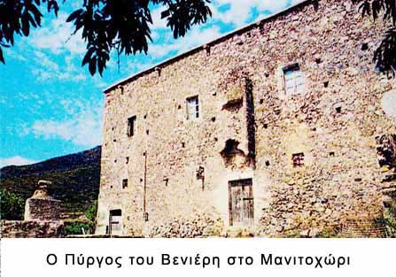

|

Τα αρχοντικά αυτά βρίσκονταν στην ύπαιθρο στα κτήματα των γαιοκτημόνων – ευγενών. Αν και λειτουργούσαν τους θερινούς μήνες ως εξοχικές επαύλεις, ο κύριος ρόλος τους ήταν άλλος. Χρησίμευαν ως αγροικίες των ευγενών, έτσι ώστε να μπορούν να ελέγχουν από κοντά τα κτήματά τους, τη σοδειά τους και να συγκεντρώνουν τους φόρους, που επέβαλλαν στους δουλοπάροικους καλλιεργητές.
Στο ισόγειο βρίσκονταν οι αποθήκες, ο ληνός για το πάτημα των σταφυλιών κι ο αχυρώνας. Στο χώρο της αυλής συναντάμε συχνά το μικρό οικογενειακό παρεκκλήσι.
Παλιότερα, όταν ο φόβος των πειρατών και των ληστών ήταν μεγάλος, τα απομονωμένα αυτά αρχοντικά είχαν τη μορφή πύργων με την απαραίτητη «καταχύστρα» να προστατεύει την είσοδο, στοιχείο που βρίσκουμε και στη βενετοκρατούμενη Κρήτη.
|
|